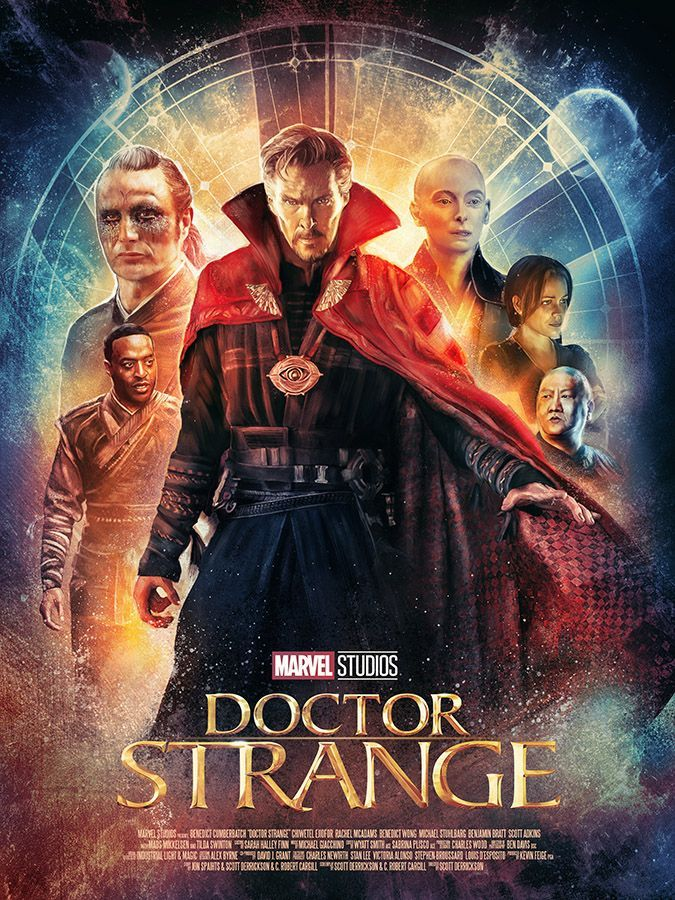

«Доктор Стрендж» (англ. Doctor Strange) — американський супергеройський фільм, знятий Скоттом Дерріксоном. Прем'єра стрічки в Україні відбулася 28 жовтня 2016 року. Фільм розповідає про доктора Стівена Стренджа, геніального хірурга, який зазнавши травми, звертається до магії. В надії вилікуватися, він відкриває світ магії, повний як можливостей, так і загроз для світу. Під час показу у США, що розпочався 3 листопада 2016 року, протягом першого тижня фільм був показаний у 3882 кінотеатрах і зібрав 84 мільйони доларів, що на той час дозволило йому зайняти перше місце серед усіх прем'єр.

Лиходій Касилій зі своїми прибічниками пробирається до бібліотеки, де вбиває бібліотекаря і вириває сторінку з чаклунської книги. Навздогін кидається чаклунка Прадавня, вона нав'язує бій, вводячи злодіїв до дзеркального невидимого виміру, але Касилій тікає. Тим часом хірург Стівен Стрендж під музику виконує операцію на очах у пацієнтів. Згодом доктор Крістіна Палмер дає йому пацієнта з кулею у голові, якого доктор Нік Вест ось-ось відправить на вилучення органів. Завдяки своїй винятковій майстерності він рятує пацієнта, але Стрендж самовпевнений і гордовитий. Дорогою з лікарні хірург потрапляє в автомобільну аварію, в якій отримує травми рук. Тепер Стівен не може бути хірургом, його кар'єра ламається. Стрендж свариться зі своєю колегою Крістіною Палмер, яка всіляко намагається йому допомогти. Він довідується про Джонатана Пенгборна, який видужав після травм, які вважав невиліковними навіть він. Джонатан розповідає йому, що вилікувався в Азії, в місці Камар-Тадж, але застерігає — «ціна страшна». Стівен безуспішно розшукує Камар-Тадж і потрапляє в засідку грабіжників, але його рятує таємничий чоловік Карл Мордо. Той приводить Стренджа до жінки Прадавньої, котра чудово знається на медицині, але обіцяє лікувати Стренджа силою духу. Стівен не вірить у надприродне, поки Прадавня силоміць не закидає його до сюрреалістичного астрального світу. Вона сумнівається чи Стрендж той, кого варто вчити магії, але Карл наполягає навчити його. В Камар-Тадж Стівен перечитує бібліотеку, де знаходить Книгу Каліостро, з якої вирвано сторінку. Новий бібліотекар Вонг пояснює — учень Прадавньої, Касилій, викрав її для якогось ритуалу. Стрендж не може опанувати магію перенесення, тоді Прадавня переносить його на Еверест, змушуючи чаклунством самотужки перенестися назад. Згодом той стає магом, так само самовпевненим і зверхнім, як був хірургом. Зрештою він без дозволу вивчає керування часом за допомогою реліквії, Ока Агаммото, і відновлює вирвану з Книги Каліостро сторінку, де йдеться про Дормамму, Темний вимір та вічне життя. Коли він випадково ламає часовий простір, прибігають Вонг і Мордо, який розсерджений на Стренджа, котрий це зробив. Бібліотекар з Карлом вражені його здібностями, проте зауважують як небезпечно порушувати закони світу, такі як час. Це може створити часову петлю, коли той самий момент повторюватиметься знову і знову. Вони розповідають, що як Месники захищають світ від матеріальних загроз, так маги — від створінь з інших вимірів. А головна загроза — це Дормамму, істота з Темного виміру, що прагне забрати Землю до своїх володінь. У Лондоні Касилій знищує обитель магів. Стрендж вирушає до обителі у Нью-Йорку. Там він зустрічає Касилія, з яким починає бій, але сили нерівні. На допомогу приходить левітуюча мантія, завдяки якій Стрендж знерухомлює лиходія за допомогою магічного обладунка. Той береться переконати Стренджа в правильності свого задуму — він хоче віддати світ Дормамму, щоб вберегти всіх людей від старіння і смерті, адже в Темному вимірі часу немає. Для цього йому необхідно знищити Прадавню і її обитель, яка створює щит навколо планети. Слуга Касилія ранить Стівена, той встигає телепортуватися до своєї колишньої лікарні, де Крістіна лікує його. Вийшовши з тіла, Стрендж допомагає здійснити операцію і б'ється в астралі зі слугою Касилія. Коли той його ледь не вбив, Крістіна робить Стренджу дефібриляцію і слугу б'є струмом. Стрендж просить Крістіну збільшити потужність і знову вдарити його струмом. Вона виконує, і слугу б'є струмом до смерті. Стівен вибачається перед Крістін і вирушає до нью-йоркської обителі. Прибувши на місце, Стрендж бачить, що Касилій втік, але зустрічає Прадавню. Оскільки майстра обителі вбито, Стрендж мусить стати новим майстром. Чаклун здогадується — Прадавня черпає силу з Темного виміру щоб продовжити життя, тому відмовляється служити їй. Касилій повертається, Стрендж з Мордо беруться протистояти йому, затягнувши в постійно змінний дзеркальний вимір. Касилій смертельно ранить Прадавню, Стівен приносить її до Крістіни та розмовляє з учителькою в астралі. Прадавня розповідає, що той має вибір повернутися до минулого життя, або служити чомусь більшому за себе. Наостанок вона каже, що дійсно використовувала Темний вимір, але не прагне безсмертя, адже кінечність життя надає йому сенсу. Касилій вривається до обителі в Гонконзі, щит навколо Землі слабшає. В цей час Мордо розчаровується в Прадавній, звинувачуючи її в обмані і появі єресі Касилія. Вони вирушають до Гонконгу, але обитель вже зруйнована і Темний вимір проникає у наш світ. За допомогою Ока Агаммото Стрендж відмотує час назад, відновивши місто і воскресивши Вонга. Але Касилій зупиняє час до того, як обитель встигла відновитися. Згадавши, що там немає часу, Стівен вирушає туди та створює часову петлю, внісши магію рідного виміру. Він зустрічає Дормамму, але той вбиває чаклуна. Проте петля переносить його назад у часі. Багато разів Дормамму вбиває Стренджа, а той постійно відроджується завдяки петлі. Дормамму усвідомлює — він також в'язень петлі і Стрендж пропонує угоду — він звільняє Дормамму, а той припиняє вторгнення на Землю і забирає Касилія з його фанатиками. Розрив закривається, обитель відновлюється, а Касилія разом з фанатиками затягує у Темний вимір. Мордо побоюється, що зміна плину часу матиме погані наслідки і йде. Стрендж повертається в Камар-Тадж та повертає на місце Око Агаммото, обіцяючи бути готовим до прийдешніх загроз, та стає хранителем обителі в Нью-Йорку.
На веб-сайті Rotten Tomatoes стрічка має рейтинг 90 % за підсумком 224 рецензій, а її середній бал становить 7,3/10. На Metacritic фільм отримав 72 бали зі 100 на підставі 49 рецензій.
«Людина-павук: Повернення додому» (2017)
«Месники: Війна нескінченності» (2018)
«Людина-павук: Далеко від дому» (2019)